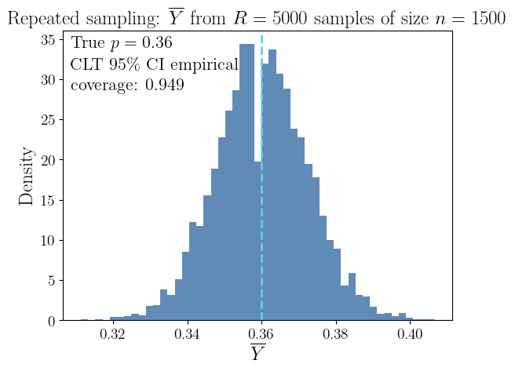
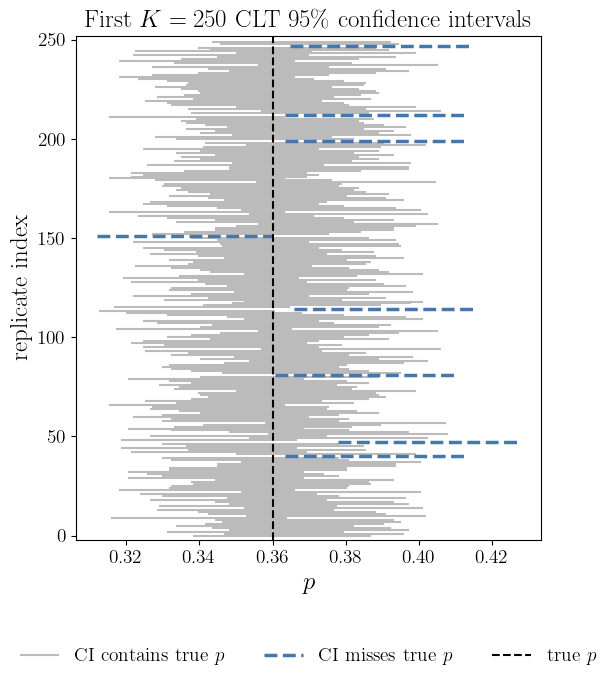
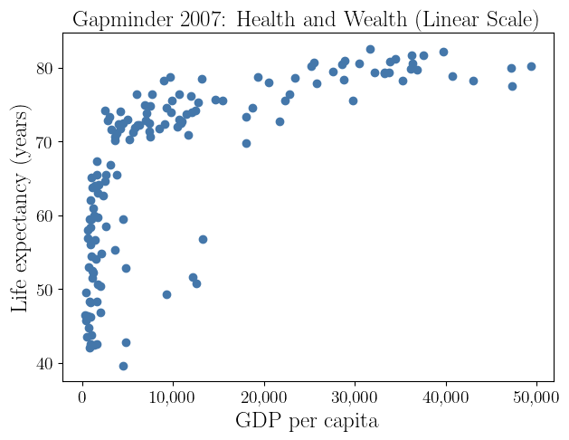
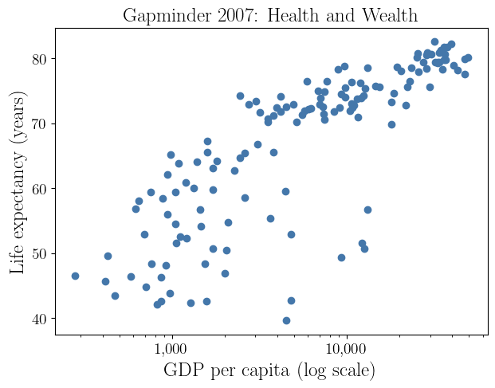

Spring 2026 material · revision for Spring 2027 pending
Introduction and Probability Review
Casella & Berger Ch. 1–4 (parts)
Diagnostic Quiz due 1/16
Assignment 2 due 1/30
September 26, 2026
These slides are written in Quarto and the source code is available in the course repository, MATH563Spring2027 on GitHub
This is a link to somewhere else, in this case the title slide
This color means emphasis
| Abbreviation | Text or Reference |
|---|---|
CB |
G. Casella & R. L. Berger, Statistical Inference, 2nd ed. (2002) |
WMS |
D. S. Wackerly, W. Mendenhall III, & R. L. Scheaffer, Mathematical Statistics with Applications, 7th ed (2008) |
EH |
B. Efron & T. Hastie, Computer Age Statistical Inference (2016) |
Mathematical formulas are written in LaTeX syntax, e.g., \(\me^{\pi i} + 1 = 0\) or \[ \int_a^b f(x) \, \dif x \approx \sum_{i=1}^n w_i f(x_i) \]
Let’s look at
The Gallup Poll tracks the approval ratings of US presidents according to a careful polling methodology
Let \(Y \sim \Bern(\mu)\), a Bernoulli (free throw shooting) distribution with probability of success \(\mu\), \[ \Prob(Y =y) = \begin{cases} \mu, & y=1, \text{ (yes, approve)}\\ 1-\mu, & y = 0, \text{ (no, do not approve)} \end{cases} \]
If \(Y_1, \ldots, Y_n \IIDsim \Bern(\mu)\), then \[\begin{align*} T &:= Y_1 + \cdots + Y_n \sim \Bin(n,\mu), \; \Prob(T = t) = \binom{n}{t} \mu^t (1-\mu)^{n-t}\\ \barY &:= \frac 1n (Y_1 + \cdots + Y_n) \\ & \appxsim \Norm\bigl(\mu,\mu(1-\mu)/n\bigr) \quad \text{by the }\class{alert}{\text{Central Limit Theorem}} \end{align*}\]

If \(Y_1, \ldots, Y_n \IIDsim \Bern(\mu)\), then we can construct a confidence interval that captures the true approval rating with high probability: \[\begin{align*} T &:= Y_1 + \cdots + Y_n \sim \Bin(n,\mu), \quad \Prob(T = t) = \binom{n}{t} \mu^t (1-\mu)^{n-t}\\ \barY &:= \frac 1n (Y_1 + \cdots + Y_n) \appxsim \Norm\bigl(\mu,\mu(1-\mu)/n\bigr) \quad \text{by the }\class{alert}{\text{Central Limit Theorem}} \end{align*}\]
\[\begin{align*} 95\% & \approx \Prob\Bigl[\mu - 1.96\sqrt{\mu(1-\mu)/n} \le \class{alert}{\barY} \le \mu + 1.96\sqrt{\mu(1-\mu)/n}\Bigr] \\ & = \Prob\Bigl[\barY - 1.96\sqrt{\mu(1-\mu)/n} \le \class{alert}{\mu} \le \barY + 1.96\sqrt{\mu(1-\mu)/n}\Bigr] \\ & \approx \Prob\Bigl[\barY - 1.96\sqrt{\barY(1-\barY)/n} \le \class{alert}{\mu} \le \barY + 1.96\sqrt{\barY(1-\barY)/n}\Bigr] \\ & \le \Prob\Bigl[\barY - 1/\sqrt{n} \le \class{alert}{\mu} \le \barY + 1/\sqrt{n} \Bigr] \quad \text{since } \sqrt{\barY(1-\barY)} \le 1/2 \end{align*}\] For \(n = 1000\) we get \(1/\sqrt{n} \approx 3\%\). ⬇ Approval Rating Jupyter 📓

Countries differ dramatically in both life expectancy and economic output. A classic dataset (World Bank / Gapminder) records, for each country,
Each point represents one country, not one individual. We are interested in the conditional behavior of life expectancy with given national income:
\[ \Ex(\text{Life} | \text{GDP} = x) \]

The scatterplot of life expectancy versus GDP per capita reveals two important statistical features.
Increases in GDP have a much larger effect on life expectancy at low income levels than at high income levels
Countries with low GDP exhibit much greater variability in life expectancy
Take logarithm to treat this \[ \Ex(\text{Life} \mid \text{GDP} = x) \approx \alpha + \beta \log(x) \]

Computational mathematics seems distinct from statistics, but there is an overlap.
Suppose that \(f\) is a random function defined in \([0,1]\), in particular, a Gaussian process, i.e., \(f \sim \GP(0,K)\). This means that for any distinct \(x_1, \ldots, x_n \in [0,1]\), the random vector of function values, \(\vf := \bigl(f(x_1), \ldots, f(x_n) \bigr)^\top\), has a multivariate Gaussian distribution with
If this is the Bayesian prior belief about \(f\), then the Bayesian posterior mean of the function conditioned on the data \(\vf = \vy\) is \[ \Ex\bigl[f(x) \mid \vf = \vy\bigr] = \vy^\top \mK^{-1} \vk(x) , \quad \text{where } \vk(x) = \bigl( K(x,x_i) \bigr)_{i=1}^n \]
The Bayesian posterior mean integral of \(f\) conditioned on the data is
\[ \Ex\biggl[\int_0^1 f(x) \, \dif x \mid \vf = \vy\biggr] = \vy^\top \mK^{-1} \int_0^1 \vk(x) \, \dif x \]
For \(K(t,x) = 2 - \lvert t - x\rvert\) this is the trapezoidal rule. ⬇ Bayesian Quadrature 📓
| Familiarity | Statistics | Probability | Matrix algebra | Multivariate calculus | Computer programming / coding | Proofs |
|---|---|---|---|---|---|---|
| Not at all | 1 | 0 | 0 | 0 | 0 | 1 |
| A bit | 2 | 1 | 0 | 2 | 2 | 2 |
| Somewhat | 5 | 4 | 4 | 2 | 5 | 7 |
| Rather | 6 | 8 | 5 | 6 | 4 | 2 |
| Very | 0 | 1 | 5 | 4 | 3 | 2 |
| Programming environments | |
|---|---|
| Python | 14 |
| R | 6 |
| MATLAB | 4 |
| C/C++ | 5 |
| Java | 1 |
(CB Ch. 1–2; WMS Ch. 1–2)
Outcome — a single possible result of a random process, e.g., yes, \(0.5\), \((1,-2)\).
Sample space — the set of all possible outcomes, e.g., \(\{\text{yes},\text{no}\}\), \(\reals\).
Event — a subset of the sample space to which we may assign a probability, e.g., intervals like \([0,\infty)\) or regions such as \(\{(x,y) : x^2 + y^2 \le 1\}\).
Event space — a collection of events (subsets of the sample space) that we are allowed to assign probabilities to.
Probability — a function \(\Prob:\text{event space}\to[0,1]\) satisfying:
Random variable/vector/function — rule that assigns a number (or vector) to each outcome, e.g., \(Y = 1\) if approve, \(0\) if not; \(X = \text{time to wait for taxi}\); \(\vX = (\text{height}, \text{weight})\)
Cumulative distribution function (CDF) \(F\) of random variable \(X\) (right-continuous)
Quantile function \(Q\) of a random variable \(X\) plays the role of the inverse of the CDF (in a left-continuous sense)
Probability density function (PDF) \(\varrho\) of an absolutely continuous random variable \(X\)
\((X,Y)\) are independent iff \(F_{X,Y}(x,y) = F_X(x) F_Y(y)\) for all \(x,y\)
Covariance \(\cov(X,Y) : = \Ex[(X- \mu_X)(Y - \mu_Y)]\)
Correlation \(\displaystyle \corr(X,Y) : = \frac{\cov(X,Y)}{\std(X) \std(Y)}\)
Independence \(\implies\) zero correlation, but zero correlation \(\notimplies\) independence
(CB §§3.1–3.3; WMS §§3.1–3.4, §§4.1–4.6)
Binomial (free-throw shooting, discrete) \(\Bin(n,p)\) \[ \varrho(x) : = \Prob(X=x) = \binom{n}{x} p^x (1-p)^{n-x}, \ x =0, \ldots, n; \quad \Ex(X) = np, \; \var(X) = np(1-p) \]
Exponential (taxi waiting, continuous) \(\Exp(\lambda)\) \[ F(x): = 1 - \exp(-\lambda x),\ \varrho(x) : = \lambda \exp(-\lambda x), \ x \ge 0; \quad \Ex(X) = 1/\lambda, \quad \var(X) = 1/\lambda^2 \]
Uniform (random number generation, continuous) \(\Unif(a,b)\) \[\begin{gather*} F(x) : = \begin{cases} 0, & -\infty < x < a, \\ \displaystyle \frac{x - a}{b - a}, & a \le x < b, \\ 1, & b \le x < \infty, \end{cases} \qquad \qquad \varrho(x): = \frac{1}{b-a}, \ x \in [a,b]; \\ \Ex(X) = \frac{a+b}{2}, \quad \var(X) = \frac{(b-a)^2}{12} \end{gather*}\]
Normal (Gaussian) (limiting distribution, continuous) \(\Norm(\mu, \sigma^2)\) \[ \varrho(x): = \frac{\exp\bigl(-(x-\mu)^2/(2\sigma^2)\bigr)}{\sqrt{2 \pi} \sigma}, \ x \in \reals;\quad \Ex(X) = \mu, \quad \var(X) = \sigma^2 \]
Multivariate Normal (Gaussian) (limiting distribution, continuous) \(\Norm(\vmu, \mSigma)\) \[\begin{gather*} \varrho(\vx): = \frac{\exp\bigl(-(\vx-\vmu)^\top \mSigma^{-1} (\vx-\vmu) /2\bigr)}{\sqrt{(2 \pi)^{d} \det(\mSigma)}};\; \Ex(\vX) = \vmu, \\ \cov(\vX) = \mSigma \class{alert}{\text{ symmetric, positive definite covariance matrix}} \end{gather*}\]
(CB §3.4)
If a PMF or PDF can be expressed as \[ \varrho(\vx\mid \vtheta) = h(\vx) \, c(\vtheta) \, \exp \biggl(\sum_k w_k(\vtheta) t_k(\vx) \biggr) \quad \vx \in \reals^d, \] then this is called an exponential family. E.g.,
Binomial for fixed \(n\) and \(0 < p < 1\): \(\quad \displaystyle \varrho(x) = \binom{n}{x} p^x (1-p)^{n-x} = \indic(x \in \{0, \ldots, n\}) \binom{n}{x} \, (1-p)^n \, \exp\biggl(\log\biggl(\frac{p}{1-p} \biggr ) x \biggr)\)
Exponential: \(\quad \varrho(x) = \indic(x \ge 0) \, \exp(-\lambda x)\)
Normal (Gaussian): \(\quad \displaystyle \varrho(x) = \frac{\exp\bigl(-(x-\mu)^2/(2\sigma^2)\bigr)}{\sqrt{2 \pi} \sigma} = \frac{\exp\bigl(-\mu^2/(2\sigma^2)\bigr)}{\sqrt{2 \pi} \sigma} \, \exp\biggl(-\frac{x^2}{2 \sigma^2} + \frac{ \mu x }{\sigma^2}\biggr)\)
Multivariate Normal (Gaussian): \[ \varrho(\vx): = \frac{\exp\bigl(-(\vx-\vmu)^\top \mSigma^{-1} (\vx-\vmu) /2\bigr)}{\sqrt{(2 \pi)^{d} \det(\mSigma)}}= \frac{\exp(-\vmu^ \top\mSigma^{-1} \vmu/2 )}{\sqrt{(2 \pi)^{d} \det(\mSigma)}} \, \exp\biggl(-\frac{\vx^\top \mSigma^{-1} \vx}{2} + \vmu^\top \mSigma^{-1} \vx \biggr) \]
Zero-inflated exponential distribution — \(X\) is the waiting time for a taxi
\[\begin{align*} \mu & = \Ex(X) = \int_{-\infty}^{\infty} x \, \dif F(x) \qquad \mathlink{https://en.wikipedia.org/wiki/Lebesgue-Stieltjes_integration}{(Lebesgue–Stieltjes integral)}\\ & = \underbrace{0 \times p}_{\text{from the jump at } 0} + \int_0^{\infty} x \times (1-p) \lambda \exp(-\lambda x) \, \dif x = (1-p)/ \lambda \\ \sigma^2 & = \var(X) = \Ex(X^2) - \mu^2 \exeq \frac{1-p^2}{\lambda^2} \end{align*}\]
Let the CDF \(F\)
and let \(f\) be a suitable function
The Lebesgue–Stieltjes integral of \(f\) with respect to \(F\) can be written as \[\begin{align*} \int f(x)\, dF(x) & = \int_{-\infty}^{x_{1}} f(x) \,\varrho(x) \, \dif x + \sum_{k=1}^{N-1} \int_{x_k}^{x_{k+1}} f(x) \, \varrho(x) \, \dif x + \int_{x_N}^{\infty} f(x) \, \varrho(x) \, \dif x \\ & \qquad \qquad + \sum_{k=1}^N f(x_k)[F(x_k) - F(x_k^{-})] \end{align*}\]
Integrate \(f\) where \(F\) is smooth, and add a weighted sum of \(f\) at the jump points of \(F\)
(CB §1.3, §4.2; WMS 2.7)
The conditional probability means restricting attention to outcomes where \(B\) occurs, then measure how often \(A\) occurs within that restricted universe of \(A\) given \(B\) (with \(\Prob(B)>0\)): \[ \Prob(A \mid B) = \frac{\Prob(A \cap B)}{\Prob(B)}, \] which means restricting attention to outcomes where \(B\) occurs, then measuring how often \(A\) occurs within that restricted universe.
Multiplication rule: \(\Prob(A \cap B) = \Prob(A \mid B) \Prob(B)\)
\(A\) and \(B\) are independent if \(\Prob(A \mid B) = \Prob(A)\) or equivalently \(\Prob(A \cap B)=\Prob(A)\Prob(B)\)
\[ \Prob(A \mid B) = \frac{\Prob(B \mid A) \, \Prob(A)}{\Prob(B)}, \qquad \Prob(B)>0 \]
Let \(X\) and \(Y\) have joint density \(\varrho_{X,Y}(x,y)\). The conditional density of \(X\) given \(Y=y\) is \[ \varrho_{X\mid Y}(x \mid y) = \frac{\varrho_{X,Y}(x,y)}{\varrho_Y(y)}, \qquad \varrho_Y(y)=\int \varrho_{X,Y}(x,y) \, \dif x \text{ is the }\class{alert}{\text{marginal density}} \text{ of } Y \]
\[ \varrho_{X\mid Y}(x\mid y) = \frac{\varrho_{Y\mid X}(y\mid x)\,\varrho_X(x)}{\varrho_Y(y)} \]
\(\exstar\) If you meet an introvert, is she more likely to be a librarian or a salesman?
\(\exstar\) What probability distributions defined on \([0,\infty)\) satisfy the memoryless property, i.e. \(\Prob[X > t + x | X > t] = \Prob[X > x]\)?
We assume that \(f\), the function to approximate or integrate, is an instance of a Gaussian process, \(\GP(0,K)\). This means that
\[\begin{gather*}
\vf := \bigl(f(x_1), \ldots, f(x_n) \bigr)^\top \sim \Norm(\vzero, \mK), \quad \text{where }\mK : = \bigl(K(x_i,x_j)\bigr)_{i,j=1}^n \\
\tvf := \bigl(f(x_1), \ldots, f(x_n), f(x) \bigr)^\top \sim \Norm(\vzero, \tmK) \\
\text{where }
\tmK : = \left(\begin{array}{c|c}
\mK & \vk(x) \\
\hline
\vk^\top(x) & K(x,x)
\end{array}
\right)
, \quad \vk(x) = \bigl( K(x,x_i) \bigr)_{i=1}^n
\end{gather*}\] and so the conditional density of \(f(x)\) given \(\vf = \vy\), where \(\vy\) is the observed data, is
\[\begin{align*}
\varrho_{f(x) | \vf}(z | \vy) = \frac{\varrho_{\tvf}(\tvy)}{\varrho_{\vf}(\vy)} = \frac{\frac{\exp(-\tvy^\top \tmK^{-1} \tvy/2)}{\sqrt{(2 \pi)^{n+1} \det(\tmK)}}}{\frac{\exp(-\vy^\top \mK^{-1} \vy/2)}{\sqrt{(2 \pi)^{n} \det(\mK)}}}
= \frac{\exp([-\tvy^\top \tmK^{-1} \tvy + \vy^\top \mK^{-1} \vy]/2)}{\sqrt{(2 \pi) \det(\tmK)/\det(\mK)}}
\end{align*}\] where \(\tvy = (\vy^\top, z)^\top\)
One can show that the inverse of the covariance matrix is
\[\begin{gather*} \tmK^{-1} = \left(\begin{array}{c|c} \mK^{-1}+\mK^{-1}\vk(x)\sigma^{-2}(x)\vk^\top(x)\mK^{-1} & -\mK^{-1}\vk(x)\sigma^{-2}(x) \\ \hline - \sigma^{-2}(x)\vk^\top(x)\mK^{-1} & \sigma^{-2}(x) \end{array} \right)\\ \text{where } \sigma^2(x)=K(x,x)-\vk^\top(x)\mK^{-1}\vk(x), \qquad \sigma^{-2}(x) := \big(\sigma^2(x)\big)^{-1} \end{gather*}\]
So
\[\begin{align*} \MoveEqLeft{-\tvy^\top \tmK^{-1} \tvy + \vy^\top \mK^{-1} \vy}\\ & = -\vy^\top[\mK^{-1}+\mK^{-1}\vk(x)\sigma^{-2}(x)\vk^\top(x)\mK^{-1}]\vy + 2 \vy^\top\mK^{-1}\vk(x)\sigma^{-2}(x) z - z^2 \sigma^{-2}(x) \\ & \qquad \qquad + \vy^\top \mK^{-1} \vy \\ & = \sigma^{-2}(x) [ z - \vy^\top \mK^{-1} \vk(x)]^2 \end{align*}\]
and \(f(x) \mid \vf = \vy \sim \Norm\bigl(\vy^\top \mK^{-1} \vk(x), \sigma^2(x) \bigr)\)
By a similar argument \(\int_0 ^1 f(x)\, \dif x \mid \vf = \vy \sim \Norm\Bigl(\vy^\top \mK^{-1} \int_0^1 \vk(x) \, \dif x, \int_0^1 \int_0^1 K(t,x) \, \dif t \dif x - \int_0^1 \vk^\top(x) \, \dif x \, \mK^{-1} \, \int_0^1 \vk(x) \, \dif x \Bigr)\)
(CB §7.2.3)
\[\begin{align*} \text{Recall that}&& \varrho_{X\mid Y}(x\mid y) &= \frac{\varrho_{Y\mid X}(y\mid x)\,\varrho_X(x)}{\varrho_Y(y)} \\ \text{Let} && X & = \text{random unknown parameter} \\ && Y & = \text{random observed data} \\ && \varrho_X & = \text{prior density or belief about the parameter} \\ &&\varrho_{Y\mid X} & = \text{likelihood} \\ && \varrho_{X\mid Y} & = \text{posterior density} \\ \text{Then} && \varrho_{X\mid Y}( \text{parameter} \mid \text{data}) & = \frac{\varrho_{Y\mid X}(\text{data}\mid \text{parameter} ) \,\varrho_X(\text{parameter})}{\varrho_Y(\text{data})} \\ && \text{posterior density } & \propto \text{likelihood} \times \text{prior density} \end{align*}\]
Conditional expectation of \(X\) given event \(A\) (with \(\Prob(A)>0\)) is \[ \Ex[X \mid A] = \frac{\Ex[X \, \indic(X \in A)]}{\Prob(A)} \qquad \text{and so} \qquad \Ex[X \, \indic(X \in A)] = \Prob(A)\,\Ex[X \mid A] \] The indicator function, \(\indic(\cdot)\), equals \(1\) if the statement inside the parentheses is true, and \(0\) otherwise.
Conditional expectation of \(X\) given \(Y=y\) is \[ \Ex[X \mid Y=y] = \int x \, \varrho_{X\mid Y}(x \mid y)\,\dif x \] If \(g(y)=\Ex[X \mid Y=y]\), then \(\Ex[X \mid Y] = g(Y)\) is a random variable depending only on \(Y\)
If \(X\) is independent of \(Y\), then \(\Ex[X \mid Y] = \Ex[X]\)
For any event \(A\) with \(0<\Prob(A)<1\), \[ \Ex[X] = \Prob(A)\,\Ex[X \mid A] + \Prob(A^c)\,\Ex[X \mid A^c] \]
More generally, if \(\{A_1,\ldots,A_n\}\) is a partition of the sample space with \(\Prob(A_i)>0\), then \[ \Ex[X] = \sum_{i=1}^n \Prob(A_i)\,\Ex[X \mid A_i]. \]
\[ \Ex\!\bigl[\Ex[X \mid Y]\bigr] = \Ex[X] \]
\[ \var(X) = \Ex\!\bigl[\var(X \mid Y)\bigr] + \var\!\bigl(\Ex[X \mid Y]\bigr) \]
(CB §§5.5) Let \(X_1, X_2, \ldots\) be random variables and \(X\) another random variable
\[ X_n \convas X \iff \Prob \left( \lim_{n \to \infty} X_n = X \right) = 1 \] For almost every outcome the sequence \(X_n\) converges to \(X\)
\[ X_n \convp X \iff \forall \varepsilon > 0, \; \Prob\big( |X_n - X| > \varepsilon \big) \;\longrightarrow\; 0. \] The probability that \(X_n\) differs significantly from \(X\) goes to zero
\[ X_n \convd X \iff \lim_{n \to \infty} F_{X_n}(x) = F_X(x) \quad \text{for all continuity points of } F_X \] The distributions of \(X_n\) approach the distribution of \(X\)
\[ X_n \convas X \;\Longrightarrow\; X_n \convp X \;\Longrightarrow\; X_n \convd X, \] and none of the reverse implications hold in general
\(X, X_1, X_2, \ldots \IIDsim \Norm(0,1)\) satisfies \(X_n \convd X\), but \(X_n \nconvp X\)
\(X=0\) and \(\Prob(X_n =x ) = \begin{cases} 1/n, & x=1 \\ 1-1/n, & x=0 \end{cases} \;\) satisfies \[ \Prob(\lvert X_n - X \rvert > \varepsilon ) = \Prob(X_n =1) = 1/n \to 0 \text{ as } n \to \infty \text{ so } X_n \convp X \] Assuming the \(X_n\) are independent, \(\Prob (X_n =1 \text{ infinitely often}) = 1\) since \[ \sum_{n=1}^{\infty} \Prob(X_n=1) = \sum_{n=1}^{\infty} \frac 1n = \infty \] so \(X_n \ \, \nconvas X\)
(CB §5.5; WMS §§7.3–7.5)
If \(X_1, X_2, \ldots \IIDsim\) some distribution with finite moment generating function, \(M(t) := \Ex\bigl(\exp(tX_1)\bigr)\), that exists for \(t\) near \(0\), and \(\mu = \Ex(X_1)\) and \(\sigma^2 = \var(X_1)\), and \[ \barX_n := \frac 1n \left(X_1 + \cdots + X_n \right), \] then \[ \frac{\barX_n - \mu}{\sigma /\sqrt{n}} \convd \Norm(0,1) \] Note that IID means independent and identically distributed
\[\begin{align*} Z_n: &= \frac{\barX_n - \mu}{\sigma /\sqrt{n}} = \frac{Y_1 + \cdots + Y_n}{\sqrt{n}} \\ M_{Z_n}(t) &= \Ex[\exp(tZ_n)] = \Ex[\exp(tY_1/\sqrt{n} + \cdots + tY_n/\sqrt{n})]\\ & = \Ex[\exp(tY_1/\sqrt{n}) \cdots \exp(tY_n/\sqrt{n})] \\ & = \{\Ex[\exp(tY_1/\sqrt{n})]\}^n \qquad \text{by independence} \\ & = [M_Y(t/\sqrt{n})]^n \\ \lim_{n \to \infty}M_{Z_n}(t) &= [M_Y(0)]^\infty = 1^\infty \quad \class{alert}{\text{(undetermined)}} \end{align*}\]
By uniqueness of moment generating functions, \[ Z_n \convd \Norm(0,1) \] \(\square\)
(CB §3.6, §3.8) \[ \Prob\bigl( f(X) \ge r \bigr) \le \frac{\Ex[f(X)]}{r} \qquad \text{for } f \class{alert}{\text{ non-negative}}, \ r > 0 \]
\[\begin{align*} \Prob(f(X)\ge r) &= \Ex\bigl[\indic\bigl(f(X)\ge r\bigr)\bigr] \\ &= \Ex\Bigl[\Ex\bigl[\indic\bigl(f(X)\ge r\bigr)\mid X\bigr]\Bigr] \qquad \text{(total expectation)} \\ &\le \Ex\Bigl[\Ex\bigl[f(X)/r \mid X\bigr]\Bigr] \qquad \text{since } \indic\bigl(f(X)\ge r\bigr)\le f(X)/r \text{ a.s.} \\ &= \Ex\bigl[f(X)/r\bigr] = \Ex[f(X)]/r \end{align*}\]
\[\begin{gather*} \Prob\bigl( \lvert X - \mu \rvert^2 \ge r^2 \bigr) \le \frac{\sigma^2}{r^2} \quad \text{where } \mu = \Ex(X), \ \sigma^2 = \var(X) \\ \Prob\bigl( \lvert X - \med(X) \rvert \ge r \bigr) \le \frac{\Ex (\lvert X - \med(X)\rvert)}{r} \end{gather*}\]
Let \(X\sim \Norm(0,1)\) and compare \(\Prob(|X|>r)\) with two bounds
Here \(\Ex\lvert X \rvert \exeq \sqrt{2/\pi} \approx 0.798\) and \(\Ex(X^2)=1\)
| \(r\) | \(\Prob(|X|>r)\) (exact) | \(\le \sqrt{2/\pi}\,/r\) (Markov) | \(\le 1/r^2\) (Chebyshev) |
|---|---|---|---|
| 1 | 0.317311 | 0.797885 (2.5×) | 1 (3.2×) |
| 2 | 0.0455003 | 0.398942 (8.8×) | 0.25 (5.5×) |
| 6 | 1.97318e-09 | 0.132981 (6.7e+07×) | 0.0277778 (1.4e+07×) |
| 10 | 1.52397e-23 | 0.0797885 (5.2e+21×) | 0.01 (6.6e+20×) |
| 100 | 0 | 0.00797885 (∞) | 0.0001 (∞) |
Let \(T_\nu \sim t_\nu\) and compare \(\Prob(|T_\nu|>r)\) with two bounds
| \(\nu\) | \(r\) | \(\Prob(|T_\nu|>r)\) (exact) | \(\le \Ex(|T_\nu|)/r\) (Markov) | \(\le \Ex(T_\nu^2)/r^2\) (Chebyshev) |
|---|---|---|---|---|
| 2 | 1 | 0.423 | 1.41 (3×) | inf (∞) |
| 2 | 2 | 0.184 | 0.707 (4×) | inf (∞) |
| 2 | 6 | 0.0267 | 0.236 (9×) | inf (∞) |
| 3 | 1 | 0.391 | 1.1 (3×) | 3 (8×) |
| 3 | 2 | 0.139 | 0.551 (4×) | 0.75 (5×) |
| 3 | 6 | 0.00927 | 0.184 (20×) | 0.0833 (9×) |
| 5 | 1 | 0.363 | 0.949 (3×) | 1.67 (5×) |
| 5 | 2 | 0.102 | 0.475 (5×) | 0.417 (4×) |
| 5 | 6 | 0.00185 | 0.158 (86×) | 0.0463 (25×) |
Let \(X_1,X_2,\dots\) be IID with \(\Ex[X_1]=\mu\) and \(\var(X_1)=\sigma^2<\infty\). Define the sample mean as \(\displaystyle\barX_n := \frac1n\sum_{i=1}^n X_i\). Then \(\barX_n \convp \mu\).
By Chebyshev’s inequality, \(\displaystyle \Prob\bigl(|\barX_n-\mu|\ge \varepsilon\bigr) \le \frac{\var(\barX_n)}{\varepsilon^2}\)
Using independence, \[ \var(\barX_n) = \var\!\left(\frac1n\sum_{i=1}^n X_i\right) = \frac{1}{n^2}\sum_{i=1}^n \var(X_i) = \frac{1}{n^2}\cdot n\sigma^2 = \frac{\sigma^2}{n} \] Therefore, \[ \Prob\bigl(|\barX_n-\mu|\ge \varepsilon\bigr) \le \frac{\sigma^2}{n\varepsilon^2} \to 0 \quad \text{as } n \to \infty \qquad \square \]
If \[\begin{align*} X_n &\convd X \quad \text{and} \\ Y_n &\convp c \quad \text{for some constant } c \end{align*}\] Then \[\begin{align*} X_n + Y_n &\convd X + c \\ X_n Y_n &\convd cX \\ \frac{X_n}{Y_n} &\convd \frac{X}{c} \quad \text{if } c \neq 0 \end{align*}\]
Random quantities converging to constants behave like constants asymptotically
© 2027 Fred J. Hickernell · MATH 563 · Prior-semester material awaiting revision